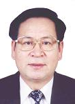

石家庄科协党建
您当前的位置：学习工作
领导机构：主席
- 
- 顾秉林
顾秉林，男，汉族，籍贯吉林，1945年10月出生，1971年入党，1970年3月参加工作，研究生学历，博士学位，教授，博士生导师，中国科学院院士。曾任清华大学工程物理系教授，系副主任、主任，清华大学研究生院院长，清华大学副校长，清华大学校长。现任北京市科协第八届委员会主席。
顾秉林，男，汉族，籍贯吉林，1945年10月出生，1971年入党，1970年3月参加工作，研究生学历，博士学位，教授，博士生导师，中国科学院院士。曾任清华大学工程物理系教授，系副主任、主任，清华大学研究生院院长，清华大学副校长，清华大学校长。现任北京市科协第八届委员会主席。